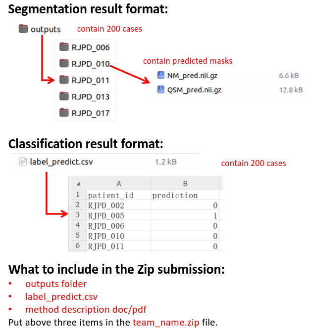

Segmentation Scoring Methodology
1. Evaluation Metrics
For each brain region in both hemispheres (left and right), we calculate:
- Dice Coefficient (Dice): Measures overlap between prediction and ground truth (weight: 0.7)
- Hausdorff Distance (Hausdorff): Measures boundary agreement (weight: 0.3)
2. Weighting Scheme
| Category |
Weights |
Description |
| Modality Weights |
QSM: 0.6
NM: 0.4 |
Relative importance of each imaging modality |
| QSM Region Weights |
CN: 1.0
Put: 1.0
GP: 1.0
STN: 1.2
SN: 1.5
RN: 1.1
DN: 1.0
|
Relative importance of each brain region in QSM |
| NM Region Weights |
SN: 2.0 |
Relative importance of brain region in NM |
| Metric Weights |
Dice: 0.7
Hausdorff: 0.3 |
Relative importance of each evaluation metric |
3. Scoring Formula
The composite score for a team is calculated as:
CompositeScore = 0.6 × QSM_Score + 0.4 × NM_Score
QSM_Score = 1.0×CN + 1.0×Put + 1.0×GP + 1.2×STN + 1.5×SN + 1.1×RN + 1.0×DN
NM_Score = 2.0×SN
Where each region score (e.g., CN) is calculated as:
RegionScore = 0.7×Dice + 0.3×(1 - NormalizedHausdorff)
NormalizedHausdorff = Hausdorff / MaxPossibleHausdorff
(MaxPossibleHausdorff = 10)
4. Ranking Criteria
Teams are ranked by their composite score in descending order. The highest possible score is 9.8 (perfect segmentation in all regions).
Submission method
1. Submission Instructions
📨 Method: Email submissions only.
Requirements:
- Description Document (DOC/PDF):
Team name, members, contact email.
Submission target (Validation/Test) and count.
Brief method description, self-evaluation results.
- Email: pdcadxfoundation@163.com
Attach the description file and model predictions in the email body.
- Solution Files: (prize-winners only)
Upload Docker image/solution + model predictions to a public storage (Google Drive, Baidu Drive, etc.).
(Only Top 5 teams are required for Docker submission)
2. Important Clarifications
A. Final Summary Publication
Selection Criteria: Based on technical innovation and test performance.
Top Teams:
- Top 5 in segmentation and classification tasks (up to 10 teams total).
- Authorship: Selected teams may nominate up to 3 members as co-authors.
B. Baseline Model Note
The provided baseline is for format reference only and does not include state-of-the-art methods.
You are not required to use it, but your outputs must match specified formats.
3. Action Required
Submit validation predictions before 2025/08/01 (3 attempts allowed).
Test submissions close on 2025/08/31 (2 attempts allowed).
For questions, contact us at
pdcadxfoundation@163.com. Best of luck!
Submission File Structure
Please organize your files exactly as shown below:

Figure 1: Required submission file structure
Important notes:
- Maintain this exact folder hierarchy
- All files must use the specified naming conventions